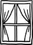

Hiç beklenmedik anlarda, alakasız ayrıntılarda zuhur eder çocukluk. Bir de bakmışsın hortlamış pörtlemiş, dikilivermiş karşına. Hoppala, kalakalırsın, hani bitmiştin, hani geçip gitmiştin, seni gidi kötü safha, uğursuz çağrışım, korkulu rüya, hafıza yarası, kalp ağrısı, hadi kış! Kış! Yeterince kışlarsan çeker gider çocukluk, bir zaman sonra geri gelmek, gelip de gene kışlanmak üzere. Geçmiş hep bugünün içinde, çocukluğumuz geleceğimizin önünde. Masalların döngüsel zamanında hikmet var. Doğrudur, mümkündür, babanın beşiğini sallayabilirsin tıngır mıngır. Bektaşi'nin dediği gibi bir şeydir zaman. Kimyadır, muammadır an. Dem bu demdir, dem bu dem... Severdik tekerlemeleri; tekrara dayalı oldukları halde her seferinde yeni bir şey söylüyormuş izlenimi vermelerine hayrandık içten içe, ritimlerine, döngülerine... Ama işte Türkiye'de kuşaktan kuşağa akan, aktarılan envai çeşit tekerleme arasında biri var ki ne çocukken ne sonrasında, oldum olası sevemedim, benimseyemedim: "Evli evine, köylü köyüne, evi olmayan sıçan deliğine..." Ne vakit bu tekerlemeyi söylesek hep bir sıkıntı, hep bir huzursuzluk. Bilhassa son dizede, bir şey dizilir boğazıma. Sanki kötü bir şey söylüyorum olmayan birine. Zamanla unutur gidersin, ehemmiyetsiz, anlamsız nice ayrıntılar arasında yerini alır bu da. Nice seneler sonra, bir akşam vakti Kazancı Yokuşu'nda, oturmuşsun masa başında, sen roman yazma sancısı Kazancı Yokuşu da gene o canım hengamesi içinde debelenirken, arabalar, kornalar, seyyar satıcılar, akşamdan kalanlar bir muamma, bir kaos, bir gayya kuyusu içinde yankılanırken, birden, durup dururken, pencereden sızan çocuk sesleri, tanımadığın kız çocukları, avazları çıktığı kadar bağırarak tekerleme söyleyen: "evi olmayan sıçan deliğine..." Hoppala, taşlaşırsın bir beş on saniye için de olsa, niye kulağımı tırmaladı şimdi bu tekerleme, eskiden de sevmezdim, eski dediğin hiç eskimez mi?
Elimde henüz yazılmamış bir roman için alınmış notlar. Notların arasında yukarıda bahsi geçen hadise var. Oturmuş okuyorum. Zaman geçmiş değil artık, mekân bir başka mekân, bir başka ülke. Ve birden, durup dururken, kendi sesimi işitiyorum, mırıldanırken, "evli evine, köylü köyüne..." Birden tüm parçalar birbirine kayıyor, gelecek geçmişin içine sızıyor. Mümkündür, doğrudur, babanın beşiğini sallayabilirsin tıngır mıngır, bir döngüdür zaman, akar kendi kendine, kuyruğunu yutar yılan. Seneler evvel Kazancı Yokuşu'nda bir roman yazmanın ortasında debelenirken pencereden sızan o tekerlemeden duyduğum sıkıntı; sızı. Hatırla geçmişi; çocukluğunu. Sadece bizlerin değil, sadece bireylerin değil, memleketlerin, sistemlerin, rejimlerin de çocukluk safhaları var. Zamanlardan o çocukluk safhası, mekânlardan o Kazancı Yokuşu. O yokuş ki 6-7 Eylül Olayları'nda azınlıkların işlettiği dükkânları yağmalayanların öfke ve nefretine sahne oldu. O yokuş ki gördü, yaşadı, azınlıkların dükkânlarında satılan buzdolaplarının yokuştan aşağı birer birer atıldığını, parçalandığını, yuvarlandığını, tıngır mıngır. O yokuş ki sıçan deliğine gönderdi evi olmayanları ve olanları...
Seneler sonra bugün Amerika'da tanışmak vaktiyle o yokuşta yaşamış yaşlı başlı bir gayrimüslim karıkoca ile. Sonra eve gelip eski notları karıştırırken, birden, aniden, hani durup dururken, kendi sesim, "evli evine, köylü köyüne, evi olmayan sıçan deliğine..."
Sırça saraylardan yazılan bir resmi tarihi ezberledik, hatmettik. Tekerleme gibi döne döne. Bu memleketin öyküsünü sırça saraydan değil sıçan deliklerinden dinlemek var bir de...
Michigan